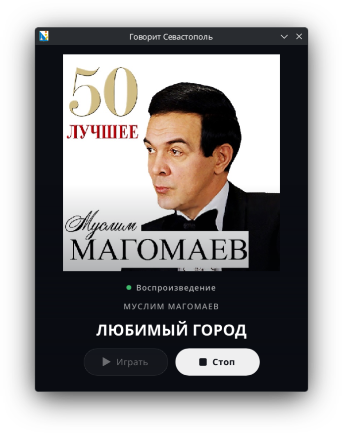

Стрим без обрывов
Звук играется из кольцевого буфера на 512 КиБ с предбуфером 64 КиБ: при обрыве сети воспроизведение продолжается, пока есть данные. Долгий обрыв — пауза с автоматическим возобновлением.
Легковесный настольный плеер онлайн-радио «Говорит Севастополь».
Нативный бинарник с малым потреблением памяти: ~23 МБ в покое и ~34 МБ при воспроизведении (замер PSS). Живой MP3-стрим, устойчивый к обрывам сети, метаданные эфира синхронно со звуком, трей и MPRIS.

Звук играется из кольцевого буфера на 512 КиБ с предбуфером 64 КиБ: при обрыве сети воспроизведение продолжается, пока есть данные. Долгий обрыв — пауза с автоматическим возобновлением.
Соединение восстанавливается с нарастающей задержкой 1 → 2 → 5 → 10 с. Сетевые ошибки, мусор в потоке и «капающий» сервер (ниже 2 КиБ/с) лечатся переподключением, а не падением плеера.
Название станции и строка «ИСПОЛНИТЕЛЬ — НАЗВАНИЕ» из ICY-метаблоков; блоки вырезаются из потока до декодера — звук идёт без искажений. Смена трека публикуется синхронно со звуком: когда звучит аудио, к которому относится метаблок, а не в момент его приёма. Рекламные вставки — названием без исполнителя.
Крупная карточка обложки текущего трека и индикатор состояния. Обложки ищет цепочка без API-ключей — iTunes → Deezer → Яндекс.Музыка, побеждает первый найденный результат; локальный кеш, асинхронная подгрузка без блокировки звука.
Значок в системном трее (Linux и Windows) с меню «Играть»/«Стоп», «Показать/Скрыть окно», «Выход»: скрытое окно не останавливает эфир. На Linux — интеграция с аплетом плееров KDE/GNOME по MPRIS: статус, трек, play/pause.
Нативный бинарник на Rust с UI на Slint (render-on-demand): интерфейс перерисовывается только по изменению состояния, окно рисует программный рендерер — графический стек не нужен. ~23 МБ памяти в покое и ~34 МБ при воспроизведении (PSS).
Флаг --headless запускает тракт без окна: статусы
«Подключение», «Воспроизведение», «Переподключение», «Буферизация»
идут в stderr. Остановка — Ctrl+C или SIGTERM, выход за секунду.
Сетевое чтение живёт в выделенном потоке и не блокирует вывод; ICY-метаблоки вырезаются до декодера.
Буфер, декодер, устойчивость к мусору и обрывам, остановка по сигналу.
Название станции и текущий трек из ICY-метаблоков.
Крупная карточка обложки и индикатор состояния; «Играть»/«Стоп», статусы, повторные сессии, headless-флаг.
Цепочка публичных сервисов без API-ключей: iTunes → Deezer → Яндекс.Музыка, первый найденный результат побеждает; локальный кеш.
Очередь метаблоков с привязкой к аудиосмещению: трек меняется в момент, когда он действительно звучит.
Значок и меню в системном трее на Linux и Windows, управление из аплета KDE/GNOME по MPRIS.
Формат, линты и тесты на каждый пуш; релизы тегом v*:
deb для Linux и exe в zip для Windows —
v0.1.0–v0.1.3.
Поведение зафиксировано спецификациями в openspec.
Готовые пакеты — на
странице релизов:
sevfm_0.1.3_amd64.deb для Linux (собран на Ubuntu 24.04,
нужен glibc ≥ 2.39; ярлык и герб появляются в меню приложений)
и sevfm-0.1.3-windows-x64.zip с sevfm.exe
для Windows. Релизы выпускаются автоматически тегом v*.
Или соберите из исходников:
sudo apt install libasound2-dev \
libxkbcommon-dev libxkbcommon-x11-dev \
libfontconfig1-dev
cargo build --releasecargo run --release # станция по умолчанию (sevfm.ru)
cargo run --release -- <URL-стрима> # произвольный живой MP3-поток
cargo run --release -- --headless # тракт без окнаЖивые тесты (требуют сеть; SIGINT-тест — ещё и аудиоустройство):
cargo test live_stream_reads_first_64k -- --ignored --nocapture
cargo test --test sigint_live -- --ignoredЛицензия — Apache License 2.0: LICENSE и NOTICE. Сторонние компоненты — THIRD-PARTY-NOTICES.md.